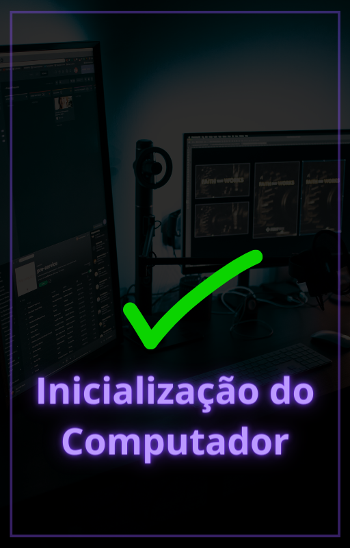

Você já se perguntou o que acontece quando você liga o seu computador? O ato de pressionar o botão de ligar desencadeia uma sequência complexa de eventos conhecida como processo de inicialização, ou "boot".
Essa fase crítica é a base para que o seu computador se torne funcional e execute todas as tarefas que você deseja.